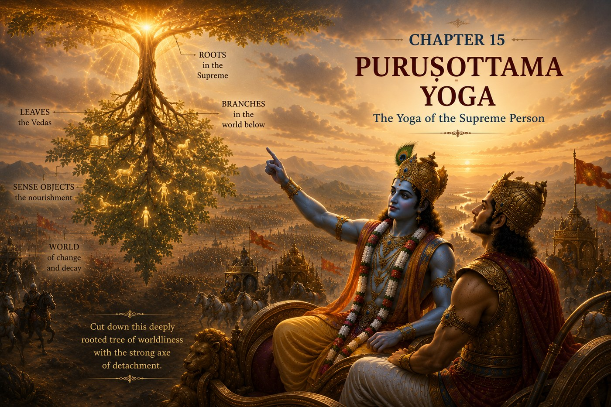

The GITA Project › Week 15 · Chapter 15

Week 15 · Chapter 15 — Puruṣhottama Yoga: The Yoga of the Supreme Person
Student Theme — Remembering Our Highest Source and Direction
Chapter SummaryWhat Happens in Chapter Fifteen
Chapter Fifteen presents the profound allegory of the upside-down Aśvattha (banyan) tree, whose roots are above and branches extend below, symbolizing the material world sustained by the Supreme Lord. Lord Shri Krishna teaches that attachment to this ever-changing world binds the soul, while wisdom and detachment help one reach the eternal abode. He explains the distinction between the perishable (Kṣhara), the imperishable individual soul (Akṣhara), and the Supreme Person (Puruṣhottama), who transcends both and sustains all existence. The chapter concludes by declaring that understanding the Supreme Person is the highest wisdom and the fulfillment of spiritual knowledge.
How the great teachers illuminate this chapter — each from their own lineage of wisdom.
Explains that the symbolic tree represents worldly existence sustained by ignorance and attachment. Through discrimination, detachment, and realization of the eternal Self, the seeker cuts down this tree and transcends the cycle of birth and death. Knowledge culminates in recognizing the Supreme Reality beyond the changing world.
Teaches that the Supreme Person lovingly sustains both the universe and every individual soul. By surrendering attachment to temporary pleasures and cultivating devotion to the Lord, the seeker reaches the eternal abode. The allegory of the tree reminds us to direct our hearts toward the everlasting rather than the temporary.
Emphasizes that the Supreme Lord alone is independent and supreme, while all souls remain eternally dependent upon Him. The material world is real but temporary. Wisdom consists in recognizing the Lord as the highest refuge and faithfully living according to His guidance through Dharma.
Presents the symbolic tree as a practical reminder to examine what truly governs our lives. Many attachments appear permanent but are temporary by nature. Lasting fulfillment comes from investing our lives in timeless values rather than temporary possessions, status, or achievements. Self-reflection and disciplined priorities lead to inner freedom.
Highlights that attachment weakens as love for the Supreme Lord grows stronger. The more the heart becomes centered upon God, the easier it becomes to let go of unhealthy dependencies and distractions. Devotion provides both the strength and the joy needed to pursue the highest purpose of life.
Common Threads of Dharma All five teachers affirm that the material world is temporary while the Supreme Lord alone is eternal. Attachment binds the individual, while wisdom, devotion, humility, and disciplined living direct the soul toward lasting freedom. Dharma helps us distinguish between what is temporary and what is eternal, enabling us to live with clarity and purpose.
…we stop asking, “What do I want from life?” and begin asking, “What is the purpose of my life?”
As children, we dream about what we want to become — a doctor, an engineer, an artist, a scientist, an entrepreneur, a teacher. These are wonderful aspirations. But sooner or later another question quietly appears. Why am I here? What kind of life should I live? What will remain after my achievements are forgotten? Chapter Fifteen invites us to look beyond success and discover significance. Lord Shri Krishna teaches Arjuna that understanding where we come from helps us understand where we are meant to go.
One question — When your achievements fade, what do you hope still remains of who you were?
A moment you may know — You reach a goal you worked hard for, and instead of feeling finished you feel a quiet “…now what?” rising underneath the success.
This chapter's promise — You will discover that a life stays steady when it stays rooted — that remembering our highest source gives lasting direction to everything we do.
The tree with its roots above
Having explained the Three Guṇas, Lord Shri Krishna now presents one of the most beautiful metaphors in the Bhagavad Gita. He describes an extraordinary tree. Its roots grow upward. Its branches spread downward. Its leaves nourish life. At first, the image seems unusual. Then Lord Shri Krishna explains its meaning.
This tree represents the constantly changing world. Its branches continue to grow. Its leaves appear and disappear. Its forms continually change. Yet its true source lies beyond what we can immediately see. Lord Shri Krishna invites Arjuna to look beyond the branches and discover the eternal Root from which everything arises.
Understanding the SituationImagine standing beneath a magnificent tree. Its branches stretch high into the sky. Its leaves provide shade. Its fruit nourishes others. Birds build their nests among its branches. Most people admire what they can see. Very few think about the roots hidden beneath the ground. Yet without healthy roots, the tree cannot survive.
Life is much the same. People often notice achievements — awards, popularity, success, talent. These are the visible branches. Lord Shri Krishna gently asks us to look deeper. What values nourish your life? What beliefs guide your choices? What is the source of your strength? Strong roots produce strong lives.
The Court of Dharma™Six steps into the source of life
- One Situation
- Lord Shri Krishna uses the image of the Aśhvattha Tree to explain the relationship between the changing world and the eternal source from which it arises.
- One Dilemma
- Should we become attached to temporary branches, or seek the eternal Root that gives life to everything?
- One Question
- What are the roots that truly nourish my life?
- One Conversation
- Lord Shri Krishna explains that the material world is constantly changing — relationships, possessions, bodies, and circumstances all change. Yet beyond all change stands the eternal reality, the Supreme Divine. Every living being is an eternal part of that reality. Although we live within the world, we are not meant to become lost in temporary attachments; we are invited to remember our true origin. He then reveals Himself as Puruṣhottama — the Supreme Person who transcends both the changing world and the individual soul while lovingly sustaining them both.
- One Virtue
- Purpose (Integrity / Rootedness) — living from remembered values rather than chasing the next visible reward. Ambition asks, “What can I achieve?” Purpose asks, “How can I serve?”
- One Life Practice
- Draw your own tree — roots labelled with your values, branches with your goals — and ask whether your goals grow from your roots. (Full practice below.)
Two verses on roots and belonging
Verse 1 — The tree with roots above · 15.1
ऊर्ध्वमूलमध:शाखमश्वत्थं प्राहुरव्ययम् ।
छन्दांसि यस्य पर्णानि यस्तं वेद स वेदवित् ॥
ūrdhva-mūlam adhaḥ-śhākham aśhvatthaṁ prāhur avyayam
chhandānsi yasya parṇāni yas taṁ veda sa veda-vit
“With roots above, branches below, the Ashvattha is said to be indestructible; the leaves of it are hymns; he who knoweth it is a Veda-knower.”
— Bhagavad Gita 15.1 · trans. Annie Besant (1922), public domain — via Wikisource
Words to Remember — ūrdhva-mūla roots above · adhaḥ-śhākha branches below · aśhvattha the cosmic tree · veda-vit the knower of true knowledge.
In plain words. An ordinary tree is rooted in the ground and grows toward the sky. Krishna flips the picture: the true tree of life is rooted above, in the eternal source, and its branches — everything we can see and touch — reach downward into the changing world. The lesson is one of direction. To understand life, do not only study the branches; trace them back to the Root.
Reflect: When you look at your own life, do you spend more time tending the branches or checking the roots?
Verse 2 — An eternal part of the Divine · 15.7
ममैवांशो जीवलोके जीवभूत: सनातन: ।
मन:षष्ठानीन्द्रियाणि प्रकृतिस्थानि कर्षति ॥
mamaivānśho jīva-loke jīva-bhūtaḥ sanātanaḥ
manaḥ-ṣhaṣhṭhānīndriyāṇi prakṛiti-sthāni karṣhati
“A portion of Mine own Self, transformed in the world of life into an immortal Spirit, draweth round itself the senses of which the mind is the sixth, veiled in matter.”
— Bhagavad Gita 15.7 · trans. Annie Besant (1922), public domain — via Wikisource
Words to Remember — anśha a part, a fragment · sanātana eternal · jīva the living being · indriya the senses.
In plain words. This is a quietly stunning claim: you are not a stranger passing through the universe. You are an eternal part of the Divine — you belong. And yet, the same verse is honest about the struggle. Living in a body, pulled by the mind and the senses, we often forget that belonging. Remembering it is the whole point; it is what keeps us rooted when the branches are shaking.
Reflect: Would you treat yourself, and others, differently if you truly believed each person carries something eternal?
Later in this chapter Krishna reveals Himself as Puruṣhottama — the Supreme Person beyond both the perishable world and the imperishable soul — and adds that memory, knowledge, and understanding themselves are gifts sustained by the Divine. Chapter Fifteen therefore encourages gratitude, humility, and purposeful living: when our roots stay connected to Dharma, our lives become stable even while the world around us keeps changing.
Dharma LensWhen the branch you're on is also holding you up
Chapter Fifteen asks us to trace our lives back to their roots — but real life rarely lets us separate roots and branches so cleanly.
A situation without an obvious answer
Meera has spent three years building a reputation as “the top student.” It started as a way of honouring her family and her love of learning — good roots. But lately she notices the ranking itself has become the thing she protects. A quieter classmate asks her to explain a concept before a big exam. Helping fully might cost Meera her edge; refusing would betray the very values — service, honesty, gratitude — she says her success is rooted in. Is guarding her achievement a betrayal of her roots, or a reasonable duty to a goal her family sacrificed for?
Both readings can be defended. “Protect what you worked for” and “serve the person in front of you” are each a kind of loyalty — one to a branch, one to a root.
Chapter Fifteen does not hand Meera a rule; it hands her a question — which of these is a branch, and which is the root? Achievements are branches: real, worth tending, but not the source. If protecting the branch means cutting the root, the whole tree is weakened. A thoughtful person might resolve Meera's moment in more than one way — she could help fully, help partly, or explain her limits honestly — and what matters is not the outcome alone but whether the choice keeps her connected to what actually nourishes her.
Character in Practice · Purpose (Integrity / Rootedness)What it means. Letting your daily choices grow from your deepest values, so that who you are and what you do stay connected — rooted rather than blown about by the next reward.
What it does not mean. Rejecting ambition, ignoring goals, or pretending success doesn't matter. Purpose gives ambition a direction; it does not cancel it.
In daily life. Choosing honesty when a shortcut is easy; helping someone even when it costs you an advantage; remembering why you started when the results are slow.
How it's misread. As rigidity or self-importance. Real rootedness is calm, not preachy — it has less to prove, not more.
Recognizing progress — without self-righteousness. Your stated values and your actual actions begin to match more often. Pair purpose with humility — roots grow downward, out of sight, and so does character.
The subject you chose because it impresses people, not because it feeds you. The friendship you keep because of status rather than warmth. The win that felt hollow the morning after. Chapter Fifteen suggests these are branches asking a root question. When a success leaves you strangely empty, it is often a signal — not that the goal was wrong, but that it drifted away from the values that were supposed to hold it up.
Leadership LabImagine two students building identical houses. One spends most of the time decorating the walls. The other spends extra time strengthening the foundation. At first, both houses appear equally beautiful. Then a powerful storm arrives. Which house remains standing?
Character is the foundation of leadership. Knowledge is important. Talent is valuable. Success is rewarding. But without strong values beneath them, none of these can endure life's greatest challenges. The strongest leaders are those whose lives are deeply rooted in Dharma.
Discussion Circle- ObserveIn verse 15.1, where are the roots of Krishna's tree, and where are its branches? Why do you think He reverses the usual picture?
- InterpretWhat does it mean that we are “eternal fragmental parts” of the Divine (15.7)? What does that change about how you might see yourself?
- ConnectDescribe a time an achievement felt less satisfying than you expected. Looking back, was it rooted in your real values, or in something else?
- Ethical tensionReturn to Meera. When does protecting a hard-won achievement stay true to one's roots, and when does it quietly cut them?
- ApplyName one value you would call a “root.” What is one branch (goal) in your life that should grow from it — and does it?
- ChallengeSomeone says, “Purpose is a luxury — just chase results and the meaning sorts itself out.” Respond using this chapter, fairly to both sides.
Purpose: to see whether your goals actually grow from your values, and to strengthen the roots that support the life you want. Time: 15–25 min, once this week · Format: individual, optionally shared in pairs · Materials: journal or paper, pen; coloured pens optional.
- Draw a large tree with clear roots, a trunk, and branches.
- Label the roots with the values that nourish your life — for example: Dharma, honesty, family, faith, gratitude, compassion, service, learning.
- Label the branches with your current goals and dreams.
- Study the drawing. Draw a line connecting each branch to the root it grows from. Are there branches with no root beneath them?
- Write one paragraph describing how your roots can better support the life you hope to build — and one small change you could make this week.
The Root-Check Practice
Once a day this week, before a choice that matters — big or small — pause and ask one question: “Which value is this growing from?” Then decide.
Notice how often a small pause reconnects the branch to the root. Purpose is not a single grand decision; it is a habit of remembering.
1. Personal. If someone observed your actions for one week, what would they conclude your deepest values are? Would that match what you say they are?
2. Dharma. Which of your current goals grow naturally from your values — and is there a branch that needs stronger roots?
3. Character. If Lord Shri Krishna were sitting beside you today, what root of your life would He encourage you to strengthen?
4. Action commitment. One small change I will make this week to bring my actions and my values into closer alignment:
5. A private question (you never have to share this): Is there a success you are chasing mainly to be seen — and quietly suspect would not nourish you even if you won it?
For a parent or guardian — please listen more than you speak. This is a conversation, not a quiz.
1. What are the values you hope stay rooted in our family, no matter what changes around us?
2. Was there a time an achievement mattered less than you expected — and something quieter mattered more?
3. When you look at your life now, which “roots” are you most grateful someone helped you grow?
Teacher Note — Chapter 15
Objective: students can explain the inverted-tree image (roots above, branches below) as the changing world arising from an eternal source, and can distinguish values (roots) from achievements (branches) in their own lives.
Sensitive-topic alert: the “what remains after I'm gone?” framing can touch on mortality and self-worth for some students. Keep it about purpose and belonging (15.7 — each person is an eternal part of the Divine), not fear; welcome sincere questions without forcing anyone to share.
Likely question: “Does having purpose mean ambition is bad?” → No. The chapter reframes ambition, giving it a direction; purpose asks “how can I serve?” without erasing “what can I achieve?”
Misconception to avoid: treating “branches” (goals, success, talent) as worthless. They are real and worth tending — the point is that they must stay connected to the roots that sustain them.
Transition to Chapter 16: having found our roots, we next examine the everyday qualities that either support Dharma or pull us away from it — how character is revealed through daily choices.
Week in One Minute
- Teaching
- The changing world is like a tree rooted above, in the eternal Divine; each of us is an eternal part of that source, meant to stay connected to it.
- Key verse
- “They speak of an eternal aśhvatth tree with its roots above and branches below…” — 15.1
- Dharma insight
- Achievements are branches; values are roots. A life stays steady in the storm when the roots stay connected to Dharma.
- Practice
- Before choices that matter, ask: “Which value is this growing from?”
A question to carry forward — When my achievements are forgotten, what root of me will remain?
A gentle note — questions like “why am I here?” or “what will remain of me?” can feel heavy, and that is completely normal. They are signs of a thoughtful mind, not a problem to fix. If such thoughts ever feel overwhelming, you do not have to carry them alone; talk with a trusted adult, teacher, family member, or counsellor. Remembering that you belong — that something in you is eternal — is meant to steady you, never to weigh you down.
In Chapter Sixteen, Lord Shri Krishna describes two very different paths. One reflects the qualities that support Dharma. The other reflects qualities that pull us away from it. Arjuna now begins learning how character is revealed through everyday choices and why cultivating noble qualities is essential for a life of wisdom and lasting fulfilment. The journey now turns from understanding our roots to examining the qualities that shape our character every day.